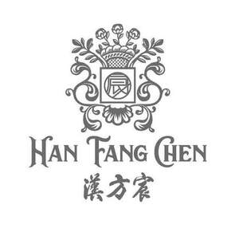

Trade Mark Journal No.2025/044 31 October 2025
UK00004279536 17 October 2025 (3,5,20,24,25,30,32,33,35,43,44)

- Class 3
- Soap; Shampoos; Laundry preparations; Cleansing milk for toilet purposes; Washing-up liquids; Dish soaps; Essential oils; Cosmetics; Incense; Perfumes; Sheet masks for cosmetic purposes; Body wash; Hair conditioners; Lipstick; Facial cleansers [cosmetic]; Natural oils for cosmetic purposes; Toothpaste; Perfumery; Cotton wool for cosmetic purposes; Phytocosmetic preparations.
- Class 5
- Tonics [medicines]; Royal jelly dietary supplements; Chinese traditional medicinal herbs; Dietetic foods adapted for medical purposes; Sanitary napkins; Wipes impregnated with disinfectants for hygiene purposes; Medicated compresses; Herbal teas for medicinal purposes; Babies' diapers; Syrups for pharmaceutical purposes; Dietary fiber; Propolis for pharmaceutical purposes; Phytotherapy preparations for medical purposes; Dietetic beverages adapted for medical purposes; Insect repellent incense; Impregnated medicated pads; Medicated soap; Medicinal ointments; Medicated shampoos for pets; Moxa rolls for moxibustion.
- Class 20
- Reusable diaper changing mats; Bedding, except linen; Cushions; Pillows; Sleeping mats of bamboo or straw; Mattresses; Furniture; Picture frames; Furniture made of rattan; Kennels for household pets; Throw pillows; Stuffed pillows; Reusable baby changing mats; Household furniture; Pet cushions; Cat trees; Mats for infant playpens; Sleeping mats; Slatted indoor blinds; Curtain rods.
- Class 24
- Bed sheets; Fabric; Towels of textile; Bed linen and blankets; Bath towels; Pillow covers; Towels; Bed covers; Quilts; Pillowcases; Quilt covers; Textile tablecloths; Cloth; Curtains of textile or plastic; Tablemats of textile; Ticks [mattress covers]; Bed blankets; Cotton blankets; Quilts filled with stuffing materials; Door curtains; Non-woven textile fabrics; Mosquito nets; Bed quilts; Mattress covers; Tapestry [wall hangings], of textile; Household linen; Face towels of textile; Cloths for removing make-up; Yoga blankets; Woolen blankets; Travelling blankets; Diaper changing cloths for babies; Loose covers for furniture; Bedsheets of leather; Bed clothes; Covers of textile for toilet seats.
- Class 25
- Underwear; Pyjamas; Waterproof clothing; Layettes [clothing]; Sleep masks; Clothing; Shoes; Hosiery; Scarves; Shawls; Down garments; Hats; Wedding dresses; Boots; Gloves [clothing]; Neckties; Belts [clothing]; Leather belts [clothing]; Shower caps; Swimsuits.
- Class 30
- Coffee; Tea; Tea-based beverages; Sugar; Confectionery; Honey; Condiments made of monosodium glutamate; Instant rice; Cereal preparations; Cereal-based snack food; Starch for food; Ice cream; Condiments; Dessert puddings; Chocolate; Royal jelly; Prepared desserts [pastries]; Biscuits; Food flavourings; Bee glue.
- Class 32
- Beer; Non-alcoholic beer; Fruit juices; Waters [beverages]; Mineral water [beverages]; Vegetable-based beverages; Douzhi (fermented bean drink); Non-alcoholic beverages; Purified drinking water; Soya-based beverages, other than milk substitutes; Rice-based beverages, other than milk substitutes; Non-alcoholic beverages flavoured with tea; Smoked plum beverages; Vegetable juices [beverages]; Orgeat; Energy drinks; Mung bean beverages; Must; Tomato juice [beverage]; Lemonades.
- Class 33
- Fruit extracts, alcoholic; Soju; Distilled beverages; Wine; Liqueurs; Rice wine; Sake; Yellow rice wine; Cooking wine; Aperitifs; Alcoholic beverages, except beer; White wine; Spirits [beverages]; Potable spirits; Alcoholic seltzers; Pre-mixed alcoholic beverages, other than beer-based; Alcoholic beverages containing fruit; Digestifs [liqueurs and spirits]; Sparkling wine; Cocktails.
- Class 35
- Business management consultancy; Commercial administration of the licensing of the goods and services of others; Import-export agency services; Sales promotion for others; Procurement services for others [purchasing goods and services for other businesses]; Provision of an online marketplace for buyers and sellers of goods and services; Retail services for pharmaceutical, veterinary and sanitary preparations and medical supplies; Wholesale services for pharmaceutical, veterinary and sanitary preparations and medical supplies; Retail or wholesale services for pharmaceutical, veterinary and sanitary preparations and medical supplies; Retail services in relation to medical instruments; Wholesale services in relation to medical apparatus; Rental of vending machines; Providing commercial information and advice for consumers in the choice of products and services; Advertising; Online advertising on a computer network; Personnel management consultancy; Systemization of information into computer databases; Data search in computer files for others; Accounting; Shop window dressing; Business management assistance; Business investigations.
- Class 43
- Accommodation bureau services [hotels, boarding houses]; Café services; Cafeteria services; Canteen services; Hotel accommodation services; Bar services; Holiday camp services [lodging]; Teahouse services; Temporary accommodation reservations; Retirement home services; Bar and restaurant services; Rental of meeting rooms; Boarding for animals; Day-nursery [crèche] services; Food reviewing services [provision of information about food and drinks]; Tourist home services; Rental of transportable buildings; Hookah lounge services; Rental of furniture; Camp services (Holiday -) [lodging].
- Class 44
- Dietary and nutritional guidance; Therapy services; Medical clinic services; Preparation of prescriptions by pharmacists; Health care; Medical consultations; Rest home services; Hospital services; Plastic surgery; Beauty salons; Aesthetician services; Beautician services; Convalescent home services; Aquaculture services; Gardening; Public bath services for hygiene purposes; Opticians' services; Medical assistance; Beauty care services; Pet grooming.
Beijing Cotton Field Technology Development Group Co., Ltd.
Representative: WPIPCN Limited